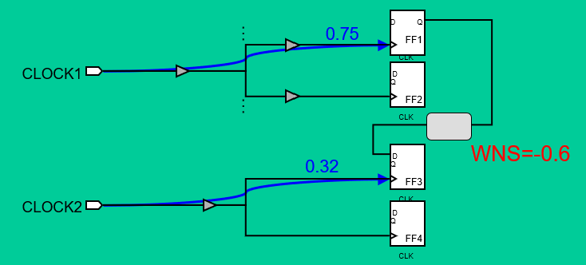
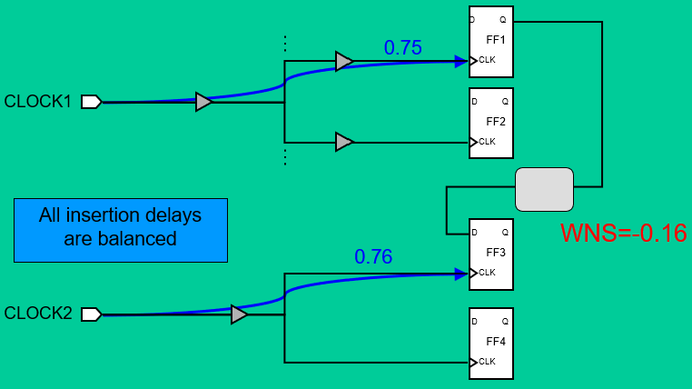

ICC-CTS
本文最后更新于：2023年11月13日 下午
- 参考
- 在做CTS之前，更重要的是要做好FloorPlan和Placement；或者说在前面应该思考时钟树如何综合。
- 时钟树上插入的clock buffer和普通buffer有何区别？
- clkbuf 的上升延迟时间和下降延迟时间较平衡，需要保证时钟上升和下降尽量对称，以此保证得到较为准确的占空比。
1. CTS的目标
- clock skew 尽量小。
- clock latency 尽量小。
- common path 尽量长。（目的是改善ocv效应）
2. CTS在做什么
- 读取clock的定义，以及在何种scenario下进行时钟树综合。
1
2read_sdc
create_scenario - 工具首先会对clock line上的cell/net进行DRV优化。
- DRV：Design Rule Violation，包括max_transition, max_capacitance, max_fanout, max_net_length等。
1
compile_clock_tree
- DRV：Design Rule Violation，包括max_transition, max_capacitance, max_fanout, max_net_length等。
- 对每个clock的latency和skew进行优化。尽量缩短每个clock的latency，并减小sink之间的skew。
1
optimize_clock_tree - balance已经定义的clock group，会尽量将不同clock的latency做的尽量接近。
1
balance_inter_clock_delay - Route Clock。
1
route_zrt_clock_tree
3. 可控的CTS
- CTS更多可控可看这篇文章以及ICC的Tool commands文档。下面仅列出部分内容。
- Target Skew：告诉工具，我们希望CTS之后能够得到的最大skew值。
1
set_clock_tree_options -target_skew 100 -clock CLK; - Target Insertion delay：指定工具最小的插入延迟(insertion delay).不指定默认为0.
1
set_clock_tree_options -target_early_delay 100 -clock CLK; - Max Transition：一般选择时钟周期的10%-20%。
1
set_max_transition 200 -clock_path [get_clocks CLK]; - CTS exceptions：
下面介绍的四个pins的设置都是该指令的配置选项。
1
set_clock_tree_exceptions -stop_pins/exclude_pins... { list of pins }Stop pins（Sink pins）
- 让CTS在某处停止，时钟信号不再继续传播；告诉工具将某些pin/port标记为sink。
- 工具只对stop_pins的delay进行balance，如果其它pin也需要进行优化，需要对pin进行sdc约束，告诉工具。
Exclude pins（Ignore pins）
- 工具通过插入guide buffer来从时钟树中隔离这些引脚。
- CTS不会对到达这些端点的时钟树进行时序计算和优化；只会进行设计规则修正。
- 常见的exclude pin就是所有的非时钟引脚，以及定义不正确的时钟引脚等，CTS阶段不需要管这些端口。
- ICC会自己推断要排除的引脚，也可以自己使用脚本再额外设置。
Nonstop pins
- 工具会穿过Nonstop pins，继续查找真正的sink点。
- 驱动生成时钟的时序单元的时钟引脚一般是Nonstop pins。例如分频器等。
- ICC认为时钟门控单元的时钟输入引脚是Nonstop pins，因此不需要手动重复设置。
Float pins
- 与Stop pins相类似，但是在构建时钟树时会考虑该引脚内部的时钟延迟。
- 工具在计算到Float pins的Insertion delay时，会将Float pin内部的延迟（正/负）添加到Insertion delay中。
- 常见使用在Hard Macro的时钟输入引脚。
考虑到Hard Macro的内部延迟信息会在lib文件的时序模型中表示，ICC会根据模型确定macro内部的延时。
根据外部计算的insertion delay判断这个是positive/negative pin。相当于在原有insertion_delay ± macro_delay.

- 与Stop pins相类似，但是在构建时钟树时会考虑该引脚内部的时钟延迟。
除了上面介绍的4个pin的约束，exception的约束还包括dont_touch/buffer/size系列。这里简要介绍一下dont_touch。
- 当设计中存在已经设计好的时钟树，可以使用指令set_clock_tree_exceptions -dont_touch_subtrees $name设置为dont touch属性，CTS会将其它待综合的时钟树和pre-exiting的时钟树进行balance。
4. CTS步骤
- CTS整体流程如下图所示，这里只介绍部分知识用作学习。

4.1 分析clock结构，制定CTS策略
- 策略主要需要尽可能的满足上面三个目标，如何让工具按照指定的策略进行时钟数综合呢？
- 可以通过preplace clk的MUX选择器或分频逻辑模块（我理解为generate clock模块）在想要布时钟线的路径上。
- 因此指定CTS策略这步需要确定preplace的逻辑以及放置的区域。
4.2 CTS开始前的检查和设置
（1）report_clock、report_clock_tree查看时钟和时钟树信息；以及report_constraints:查看设计是否有violation.
- 此时可以有hold violation。
（2）设置目标skew和insertion delay。设置DRC规则：max_fanout , max_transition , max_capacitance；下面有关于clock root相关DRC设置要求。
（3）设置时钟树的references
- 指定clock buffer/inverter list
- 其中inverter对工艺要求较高，必须采用LVT或SVT，而且只允许有一种VT。更多内容可以看这篇文章。
（4）时钟树布线规则的定义(NDR)
为了减少其它信号串扰和EM（电子迁移）的影响，一般会采用双倍线宽和双倍间距；并一般采用高层金属作为时钟信号的走线。
标准单元的pin脚一般为M1/M2金属层，如果设置为NDR，会导致很多DRC问题，所以在sink端还是使用默认线宽和间距布线。

（5）设置时钟树延迟计算模式：精确程度：arnoldi > awe > elmore。
1
set_delay_calculation_options -routed_clock arnoldi
4.3 Clock root 定义
- clock root如果是input port，那么分为是否有I/O Pad。
- 如果没有I/O Pad，那么需要准确的指定输入端口的驱动单元。
- 对于一个弱的驱动来说，CTS需要插入额外的buffer来保证DRC通过。
- 如果不设置，那么工具会假设输入端口的驱动能力无穷大，内部不需要做额外的buffer处理。
- 如果有I/O Pad，那么需要准确的指定input_transition的大小
- 如果没有I/O Pad，那么需要准确的指定输入端口的驱动单元。
- 定义时钟root点
- 使用create_clock定义时钟的root点。
1
create_clock -period 10 -name clk1 [get_ports FCLK1] - 如果是generate clock，可以使用create_generate_clock定义。
要求master clock要定义清楚，并且generate clock和master clock要可以trace通。

根据上图可以写出tcl：
1
create_generated_clock -name CLKPDIV2 -source UPLL0/CLKOUT -add -master_clock CLKP -divide_by 2 [get_pins UFF0/Q]generate clock和master clock之间的相位关系必须指定清楚，最简单的方式是直接指定相位边沿关系。
1
create_generated_clock -name CLKdiv2 -edges {2 4 6} -source CLK [get_pins Udiv/Q]
- 使用create_clock定义时钟的root点。
4.4 找时序路径的端点
- clock sinks可以是stop pins，exclude pins以及float pins。根据第3节的介绍来判断CTS如何计算/优化。
- 第3节介绍的时钟端点是在同一时钟下各个路径之间的balance，我们也需要关心多个create_clock定义的时钟root端。
虽不是同一时钟，但有reg进行talk。默认情况，CTS会分别build各自的clock tree，不会做inter-clock balance。如下所示。
上图由于两个时钟skew的值相差太大，导致很严重的建立时间违例。可以通过tcl设置进行inter-clock 的balance。
1
set_inter_clock_delay_options -balance_group "Clk1 Clk2" -balance_group_name group2 balance_inter_clock_delay -clock_trees { clock_1 clock_2 }
4.5 Build Clock Tree
- 主要有两种方法
- clock_opt
- compile_clock_tree + optimize_clock_tree
- 相关指令选项可以看Tool Commands手册。
- 完成之后可以report_timing/report_clock_tree/report_constraint
4.6 Post-CTS
- 前面完成的是Pre-CTS，下面将完成Post-CTS。
- ideal clock & propagated clock
- 在Pre-CTS阶段之前，我们使用的是ideal clock，从clock source到寄存器的时钟端口的network latency的值为我们使用set_clock_latency约束的。
- 在Pre-CTS之后，工具可以自动update IO latency 去反应实际时钟到达时间，并在原有的时钟树上插入计算的IO latency。具体内容可以在2016版ICC User Guide 5-104页找到。
1
2update_clock_latency
# 或在clock_opt加上 -update_clock_latency 选项 - 在Post-CTS阶段之后，我们使用的是propagated clock，此时使用的network latency是实际的时钟互连线网络的RC 提取参数计算出的延时。
- Post-CTS 时钟属性处理
- 移除所有时钟的理想属性
1
2
3
4remove_ideal_network [ all_fanout -flat -clock_tree ]
remove_clock_latency $clk
# 设置时钟为propagate属性
set_propagate_clock [ get_attr $clock source ] - 重新定义clock uncertainty
- Pre-CTS
- setup： uncertainty = PLL jitter + 预估的clock skew。
- hold：uncertainty = 预估的clock skew + hold margin。
- hold是同一个时钟边沿检测，可以去掉clk jitter的影响。setup是两个clk边沿计算，需要加上jitter的影响。
- Post-CTS
- 在Post-CTS阶段，时钟树的propagate delay已经确定，skew是真实存在的，不用再计算在uncertainty中。
- setup：uncertainty = PLL jitter。
- hold：0 + hold_margin。
- hold margin：考虑到OCV的影响，不同的Flipflop之间的hold time可能是不同的，需要加hold margin来保证。Foundry提供的Signoff表格会给出要求的hold margin。
- Pre-CTS
- 在做完上面的处理之后，使用指令update_clock_latency再更新一下latency信息。
- 移除所有时钟的理想属性
- 修hold violation
- 首先搬出一篇文章，讲的很清楚为什么在Post-CTS阶段才去管hold violation。
- 总结来说，hold和skew的关系最为密切，只有在Post-CTS阶段，skew值是真实计算的值，这个时候去修hold才是有意义的。
- 并不是说hold优先级没有setup高，反而hold才是最危险的，投片后如果出现hold violation无法通过降频去改善。
- 可以通过指令 set_fix_hold去修hold violation。
- 此时没有真实的布线，但是可以通过虚拟布线提取参数进行hold/setup的计算，此步就可以去修setup/hold的violation。
- Route是在解DRC的过程，而在Post Route时，需要考虑SI，setup/hold等问题。
- 首先搬出一篇文章，讲的很清楚为什么在Post-CTS阶段才去管hold violation。
- 面积优化
- psynopt -area_recovery
- set_max_area 0
- set physopt_area_critical_range 0.2, 该指令是指在timing slack大于某个值的path上用时序换面积。
- extract_rc 提取寄生参数
- 时钟绕线
1
route_zrt_group -all_clock_nets -reuse_existing_global_route true